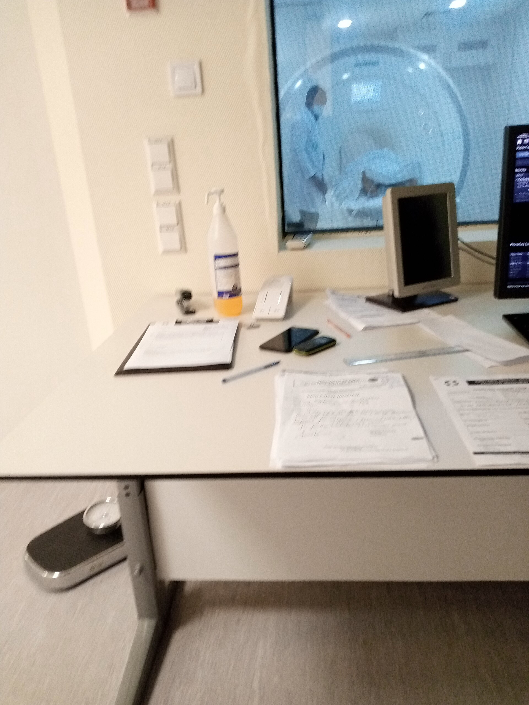
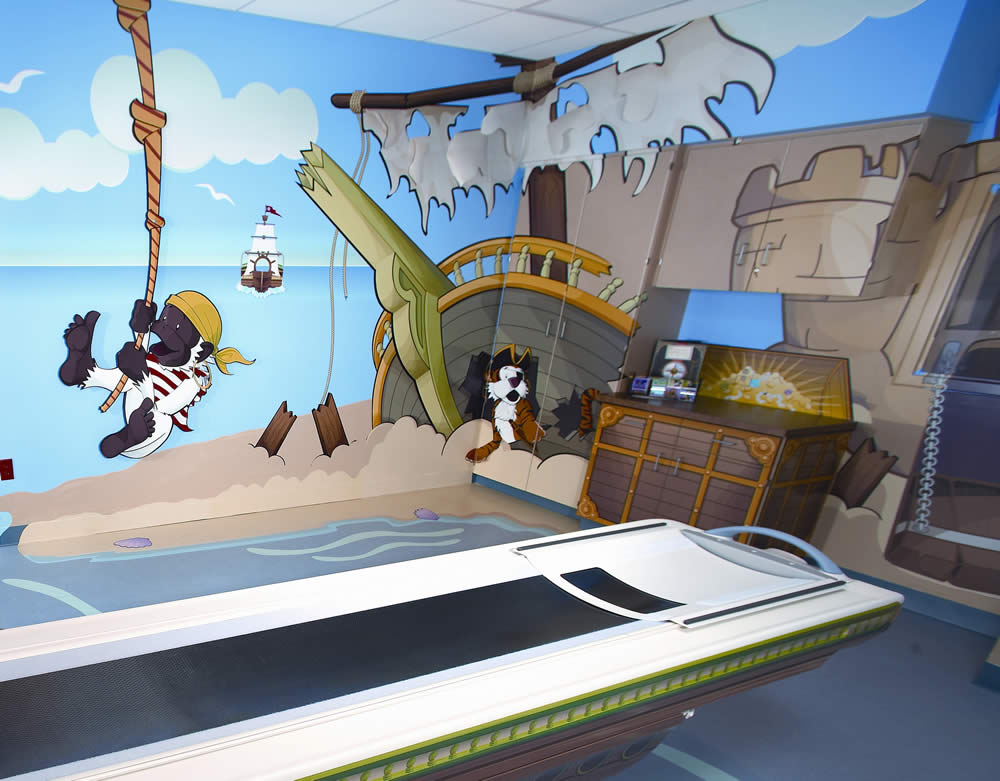
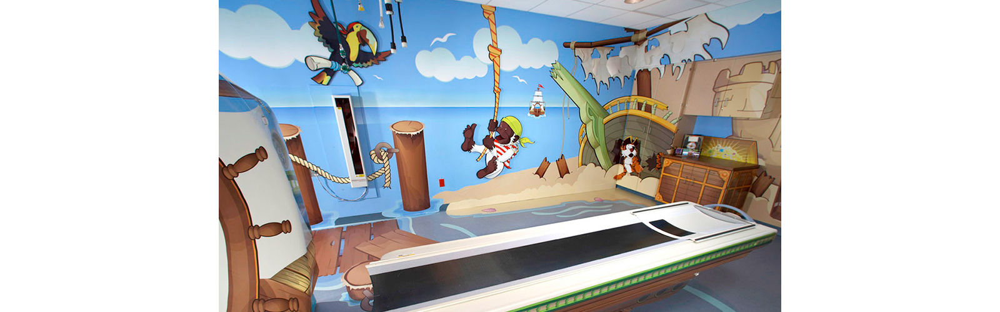
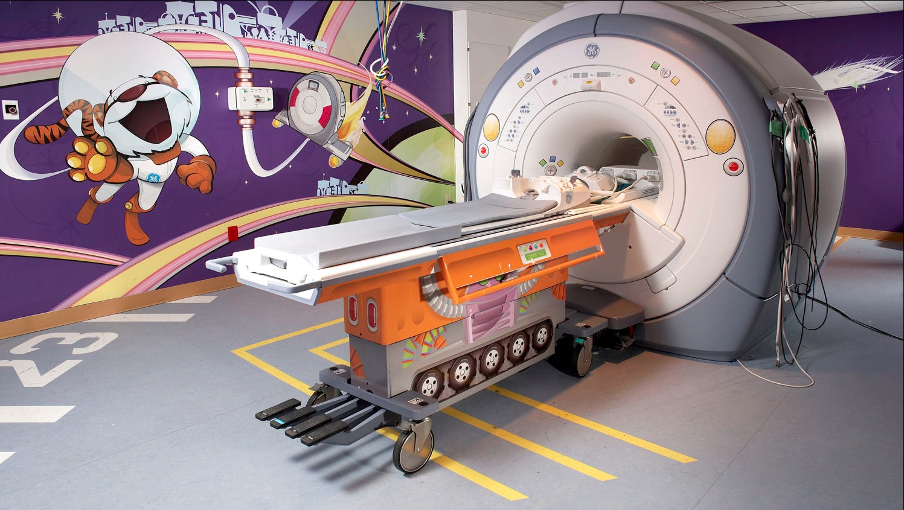

User
research.
What is user research?
What people say is not always what they do.
Ask your neighbour:
Do you like my wallet?
What kind of answer did you get?
Praise? Guessing? Politeness?
Now ask:
Would you use this tomorrow?
Those questions measure taste, not behaviour.
You collected
- Approval
- Prediction
- Social courtesy
You needed
- A real task
- A real last time
- Observable friction
Start with a research question.
Method follows the question. Never the reverse.
- How do students pay at the canteen when rushed?
- Where does a paper wallet slow payment?
- What must stay separate: cash, coins, cards?
Watch for
behaviour.
What did they see that users might never say?
IDEO did not ask: “What cart do you want?”
- 01Field first. Watch shoppers in the store.
- 02Patterns next. Safety, baskets, checkout friction.
- 03Prototype last. Rough ideas tested against behaviour.
Why so many rough prototypes?
Adventure
Series.
A little girl was crying on her way to a scanner he designed.
Doug Dietz, industrial designer, GE Healthcare, 20+ years.
He suddenly saw the room through her eyes.
- 01Room. Dark · flickering fluorescent lights.
- 02Machine. “A brick with a hole in it.”
- 03Gap. Cutting-edge tech · terrifying for children.

How might we create a scanner experience children would love?
He did not start by redesigning the machine.
After a Stanford d.school workshop: human-centred process + cross-functional team.
- 01Observe. Young children at a day-care centre.
- 02Interview. Child-life specialists: what patients go through.
- 03Partners. Children’s museum · doctors · staff · two hospitals · GE volunteers.
What would observation at a day care reveal that a survey of parents would miss?
First Adventure Series pilot.
Children’s hospital · University of Pittsburgh Medical Center.
- 01Same tech. Scanner hardware unchanged underneath.
- 02New story. Whole room becomes an adventure.
- 03Test live. Install · watch children · iterate.

Pirate Adventure.
Visual transformation of the scan room, GE Healthcare.
- 01Patients stand on a dock.
- 02Shipwreck and sand castles in the corner.
- 03Children “walk the plank” to be scanned.

More adventures. Same idea.
Coral City · Cozy Camp · Space themes: experience redesign, not only the machine.

Coral City
- Underwater · yellow submarine · harp sounds
Cozy Camp
- Sleeping bag · starry sky · camp setting
What changed after empathy-led redesign?
- 01Satisfaction scores up ~90%.
- 02Anxiety down. Some kids ask to come back tomorrow.
- 03Hold still → fewer repeat scans → less anaesthesia → more patients/day.
“If you got the child you got the parent, and if you got the parent, you got the child.”
Doug Dietz
Hear Doug
tell it.
How did Doug conduct the research?
Time with children, parents, and the people who run the scan. Not a satisfaction survey.
Four methods. One journey.
From the appointment to the car ride home. Dietz, 2017 interview. Kelley & Kelley, Creative Confidence.
- 01Observe. The room at a child’s height. Noise, smell, lights, warning stickers, having to lie still.
- 02Make with kids. First session on the floor of a day care. Children sketch. The team builds small model rooms.
- 03Ask experts. Child-life specialists, learning specialists, doctors, technologists, a children’s museum.
- 04Pilot and watch. Install in a children’s hospital. Write a script the operator can say out loud.
Kids: show the idea. Then ask.
He did not sit them down for “Do you like the scanner?”
- 01Sketch. Children drew what the experience could be. Drawings went on the wall.
- 02His questions, looking at those drawings: “What could this be? What are the possibilities?”
- 03And: “How could we bring some of these new things to light?”
Parents: listen to what they say to the child.
- 01In the hall. He heard a father: “We talked about this. Are you going to be brave?”
- 02In the new room. He talked with parents while the child tugged a sleeve.
- 03Questions he kept: “What is making the child smile? How do we make this special for the family?”
Staff: explain the scan in a child’s terms.
The job he gave each expert. He did not publish a word-for-word script.
- 01Child-life. What does the patient go through, and how do we say that to a child?
- 02Learning specialists. What can a child understand here, and what can they not?
- 03Technologists. What should the operator say so the story and the scan stay together?
- 04Doctors. What must not change: lie still, stay safe, leave the machine underneath.
Research plan.
Write it before you talk to anyone. Adventure Series, as a worked example.
Three things the plan decides.
- 01Aim. Learn the scan from the booking to the car ride home.
- 02People. Children, parents, and the staff who run the scan.
- 03Use. Change the room, the story, and the operator’s words. Leave the machine.
Research questions.
The study answers these. You do not read them aloud.
- 01What frightens a child on the way into the room?
- 02What do parents say and do that the child copies?
- 03What must the scan still do, and what can the experience change?
Who you meet, and how.
- 01Children. Day care and patients. Sketch and watch.
- 02Parents. Hall and scan room. Listen.
- 03Staff. Child-life, learning specialists, technologists, doctors.
- 04Then. One pilot hospital. Watch a real scan. Rewrite the operator script.
Research.
The plan is the intent. Research is the hours with people.
In the room.
- 01Watch before you ask.
- 02One question. Then stop.
- 03Children draw. Adults tell the last real time.
- 04Notes. Their words and their actions. Not your summary.
What you bring back.
- 01Quotes in their words.
- 02A sketch, a pause, or a workaround.
- 03Not “they would love a pirate theme.”
- 04Not your idea of a better machine.
Discussion guide.
The script for one conversation. A different guide for each audience.
Open every conversation this way.
- 01Role. I am here to learn, not to defend a design.
- 02Consent. You can stop. There is no right answer.
- 03Task. Tell me about a real scan, not whether you like the room.
- 04Notes. I will write your words down.
Guide: children.
Show first. “What could this be?” is his question.
- 01Can you draw the room?
- 02What could this be?
- 03What are the possibilities?
- 04Show me the scary part. Noise, smell, lights, or lying still.
Guide: parents.
- 01Walk me through the last scan, from the call to the car.
- 02What did you say to your child outside the door?
- 03Where did they pull back?
- 04What made them smile, if anything?
Guide: hospital staff.
- 01Walk me through a child’s scan from your side.
- 02Where do they struggle to lie still?
- 03What do you say when they are afraid?
- 04What must not change?
Close, then leave with evidence.
- 01Ask. What should I have asked?
- 02Stop. Thank them. Do not pitch a theme.
- 03Leave with quotes, a sketch, or one hesitation.
- 04Test. A mural that cannot point to one of those is still your idea.
Research lesson from Adventure Series.
Source: thisisdesignthinking.net · Kelley & Kelley, Creative Confidence.
- 01Empathy first. See the experience as the user feels it.
- 02Observe + ask experts. Day care · specialists · museum · hospitals.
- 03Prototype the experience, not only the machine.
Was the problem the scanner, or the experience around it?
Evidence is stronger than opinion.
Weak claim
- “Kids hate scanners.”
Stronger claim
- “Children cried entering a dark room with a brick-like machine. Sedation was common.”
What is user research?
User research
A systematic way to gather evidence about people’s goals, tasks, and behaviour in context, so design decisions are based on reality, not assumption.
Two useful axes.
Attitudinal
- What people say, believe, prefer
Behavioural
- What people do, attempt, abandon
Great research often combines both, but knows which one it is collecting.
Qualitative vs quantitative.
Qualitative
- Why and how
- Depth, stories, context
Quantitative
- How many and how often
- Scale, comparison, trends
Three methods for this studio.
- 01Interview: past behaviour and language.
- 02Observation: what happens without your tour.
- 03Usability test: can they complete a task?
From opinion to behaviour.
Weak
- Do you like this?
- Would you use this?
- Do you want more pockets?
Stronger
- Walk me through the last time you paid.
- What did your hands do first?
- Where did you slow down?
Live user research, with one of you.
One volunteer. Front of room.
I interview. You watch. Then you practise.
- 01Participant: answer from real life only.
- 02Class: silent. Notes on paper.
- 03Topic: last time you paid for something on campus.
While we talk, write down:
- 01Quotes: exact words, not summaries.
- 02Actions: hands, pauses, workarounds.
- 03My mistakes: leading questions, filling silence, rushing.
Demo in progress.
Class stays quiet. Capture quotes and friction.
What did you hear that was evidence, not opinion?
Call out what you captured.
Evidence
- Quotes
- Steps
- Hesitations
Not evidence
- “They like…”
- “They would…”
- Your redesign ideas
Now you try. Same standard.
Triads. Rotate roles.
Topic: paying and carrying money. Do not show your wallet first.
- 01Interviewer: ask about a real last time.
- 02Participant: answer from real life.
- 03Note-taker: quotes, actions, hesitations.
Where did the interview get thin?
Leading. Explaining. Filling silence. Jumping to solutions.
Interview cheat sheet.
- 01Past, not future. Last real time only.
- 02One question. Ask, then stop.
- 03Follow verbs. Paid, searched, hid, dropped, waited.
- 04Write quotes. Their words beat your summary.
When stuck, probe:
- Tell me more about that.
- What happened just before?
- What did you do next?
- Can you show me with your hands?
Start user research.
Two interviews solo. Synthesis in pairs.
Two interviews.
Different people. Same research question family: paying and carrying money.
- 01Ask about a real last time.
- 02Capture at least five quotes.
- 03Log one hesitation or workaround.
An insight is not a quote.
Finding
- “She said coins fall out.”
Insight
- “In a rush, loose coins create delay and embarrassment, so payment needs a dedicated fast pocket.”
Synthesise together.
- 01Cluster similar quotes and actions.
- 02Write three insights. Each cites evidence.
- 03Write one HMW that a design could answer.
Research sheet.
- 01Research question: one sentence.
- 02Two interviews: who, context, duration.
- 03Five quotes: verbatim.
- 04Three insights + one HMW
Which method should you use?
Choose by the research question, then by time, access, and risk.
Decision rule.
- Why / meaning? Interview or contextual inquiry.
- What happens? Observation or analytics.
- Does it work? Usability test.
- How to organise? Card sort or tree test.
- Over days? Diary study.
Interview
Best for motives, language, context, and past behaviour.
- 01When: early discovery; unclear problem.
- 02Risk: polite answers; imagined futures.
- 03Evidence: quotes, tasks, constraints, fears.
Case: IDEO shopping cart · ABC Nightline 1999.
Team interviewed shoppers, store staff, cart makers, and repair experts.
- 01Ask. Repair expert: plastic carts catch wind; clocked at 35 mph in parking lots.
- 02Find. ~22,000 child hospitalisations/year; cart theft ~$800M industry cost.
- 03Learn. Expert interviews surfaced risks designers would not invent in a studio.
Observation
Best when actions matter more than explanations.
- 01When: queues, counters, public tasks.
- 02Risk: you interpret too fast; people notice you.
- 03Evidence: steps, pauses, workarounds, errors.
Case: IDEO grocery-store field day.
Same Nightline project: about 2 hours watching real shoppers in stores.
- 01Watch. Most shoppers never let go of the cart; pros leave it and roam.
- 02Find. Four need areas: child safety · theft · shopping process · finding items.
- 03Learn. Watching behaviour beat asking “What cart do you want?”
Contextual inquiry
Observe the task, then ask in the same place.
- 01When: body, tools, place, and timing matter.
- 02Risk: interrupting the natural flow.
- 03Evidence: journey steps + reasons.
Case: anaesthesia work · London hospital.
Published CI study (Cognition, Technology & Work) using Beyer & Holtzblatt.
- 01Work. 11 contextual inquiries · ~40 hours · 11 operations.
- 02Find. Infusion-pump visibility gaps; handovers lost critical info.
- 03Learn. Asking at the bedside revealed coordination lab interviews miss.
Usability test
Best when you have a prototype and a clear task.
- 01When: validate folds, labels, pay flow.
- 02Rule: do not teach; observe the attempt.
- 03Evidence: success, time, errors, severity.
Case: Sun Microsystems website · Nielsen 1995.
Task-based tests of homepage icons and old button bar, published on NN/g.
- 01Task. Guess icons with no labels; then use the live site for set tasks.
- 02Find. “Under construction” worker icon hated; lightning looked destructive.
- 03Learn. Making header buttons look clickable → +416% use (vs +48% site traffic).
How many people?
Nielsen & Landauer model · NN/g. Qualitative usability, not surveys.
- 01Usability: ~5 users often find ~85% of issues in one design, then fix & retest.
- 02Interview: stop when the same patterns keep repeating.
- 03Survey: need larger N, only after you know what to measure.
Survey
Best for scale after the problem is already clear.
Good for
- How many? How often?
Weak for
- Discovering unknown behaviour
Case: Net Promoter Score · Reichheld / Bain.
Harvard Business Review 2003. One question adopted across industries.
- 01Ask. “How likely are you to recommend us to a friend?” (0–10).
- 02Find. % promoters (9–10) minus % detractors (0–6) = NPS.
- 03Learn. Scales loyalty trends. It does not invent why people struggle.
Card sort / tree test
Best when grouping and findability are the problem.
- 01Card sort: how people group items.
- 02Tree test: can they find the right place?
- 03Evidence: labels, categories, missed paths.
Case: Eurostar website IA · ~2005.
Open online card sort to rebuild navigation across UK / Europe / global.
- 01Work. ~80 cards · 180 travellers · 3 countries · 11,000+ pages to simplify.
- 02Find. Users grouped chronologically + booking / trip-planning, not an org chart.
- 03Learn. Closed sort later validated 4 of 5 top-level groups.
Diary study
Best when behaviour unfolds across days.
- 01When: habits, routines, repeated friction.
- 02Risk: incomplete entries; memory bias.
- 03Evidence: patterns over time.
Case: Coursera learner diary · Liu 2022.
First diary study at Coursera: how learners use a new material type.
- 01Work. 14 days · 12 learners · 10 daily prompts (5 in-situ + 5 end-of-day).
- 02Find. Triggers and blockers in real life, richer than one-off interviews.
- 03Learn. Habits across days cannot be seen in a single lab session.
Affinity synthesis
Best after research, when notes feel messy.
- 01One note per quote or observation.
- 02Cluster by shared behaviour.
- 03Name the pattern as an insight with evidence.
Case: IDEO affinity wall · Nightline day 1.
Teams returned from the field and posted observations on the walls.
- 01Notes. Share everything learned. Vote with Post-its, not opinions.
- 02Clusters. Four themes: child safety · theft · shopping process · finding items.
- 03Learn. Split into theme teams. Prototypes follow clusters, not lone ideas.
Protect the evidence.
- Do not lead the witness.
- Do not sell your design during research.
- Do not treat one loud person as “all users.”
- Consent, privacy, and respect for embarrassment.
Only then: redesign the wallet.
Every fold must point to evidence: a quote, an observed pause, or a failed task.
What is user research?
Answer with a method, a question, and evidence.